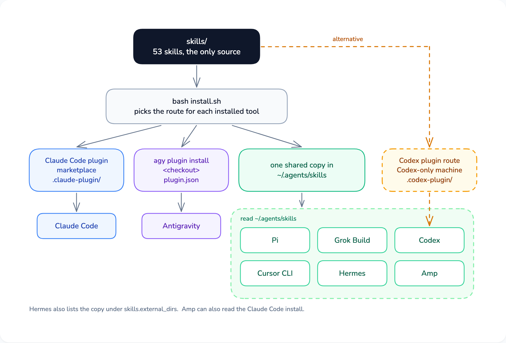
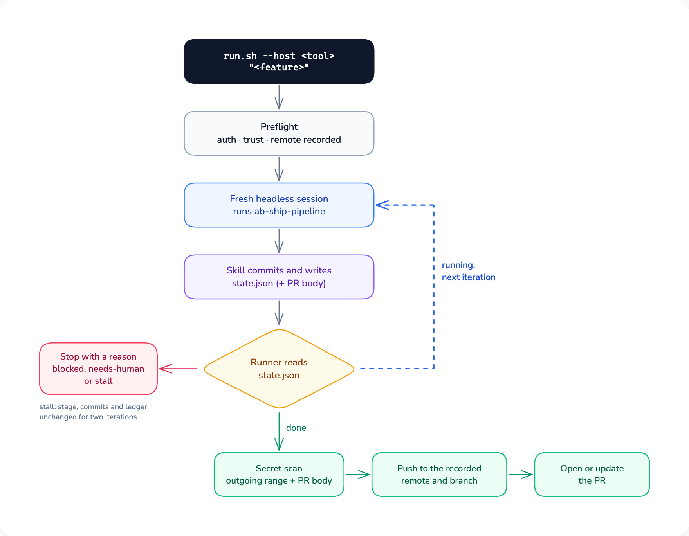
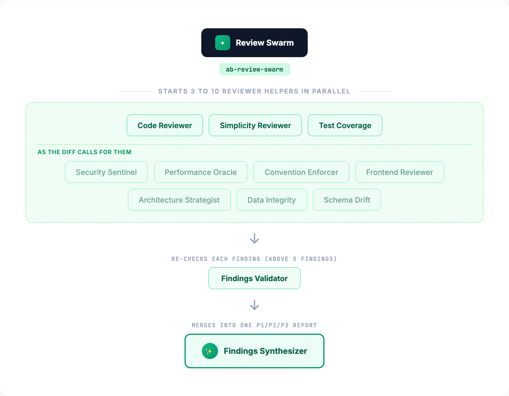
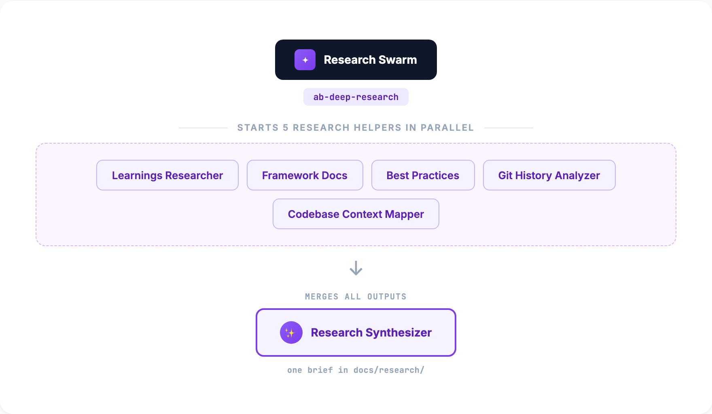
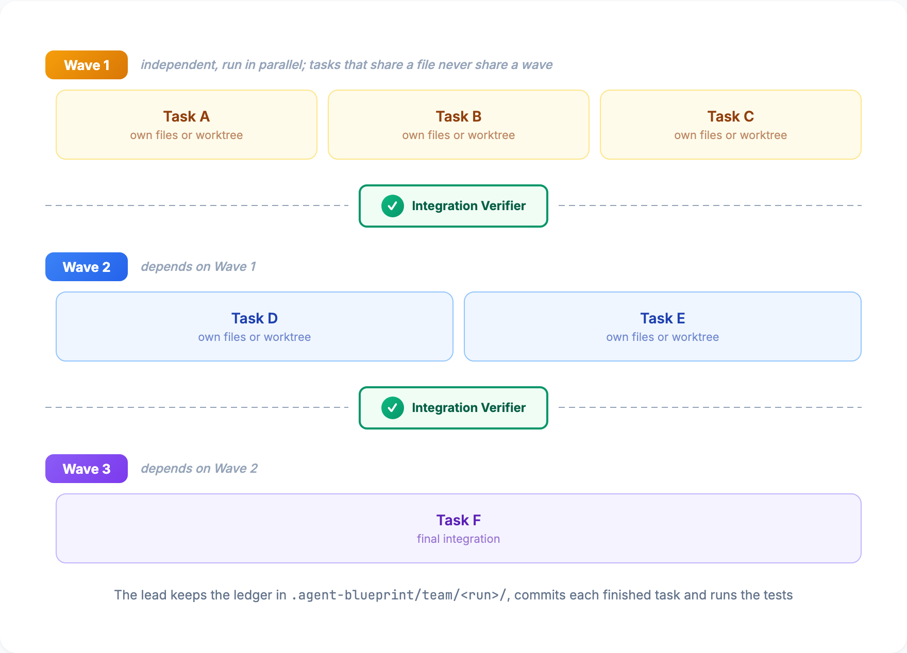
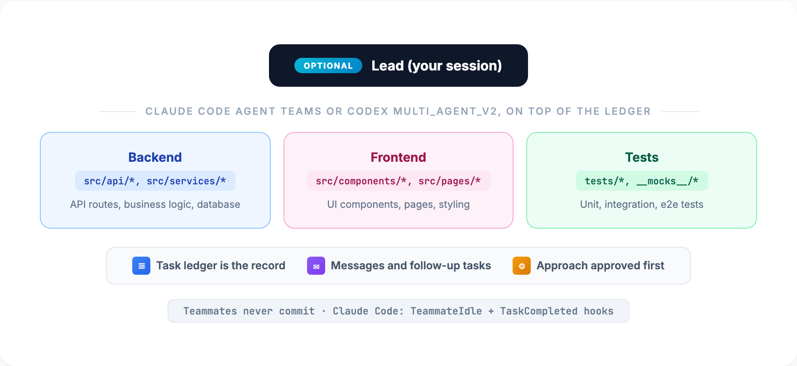
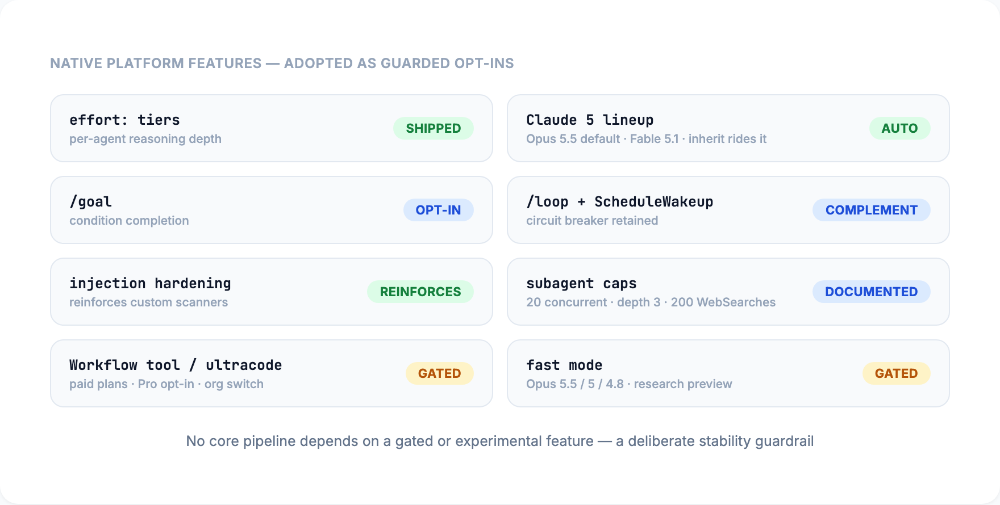
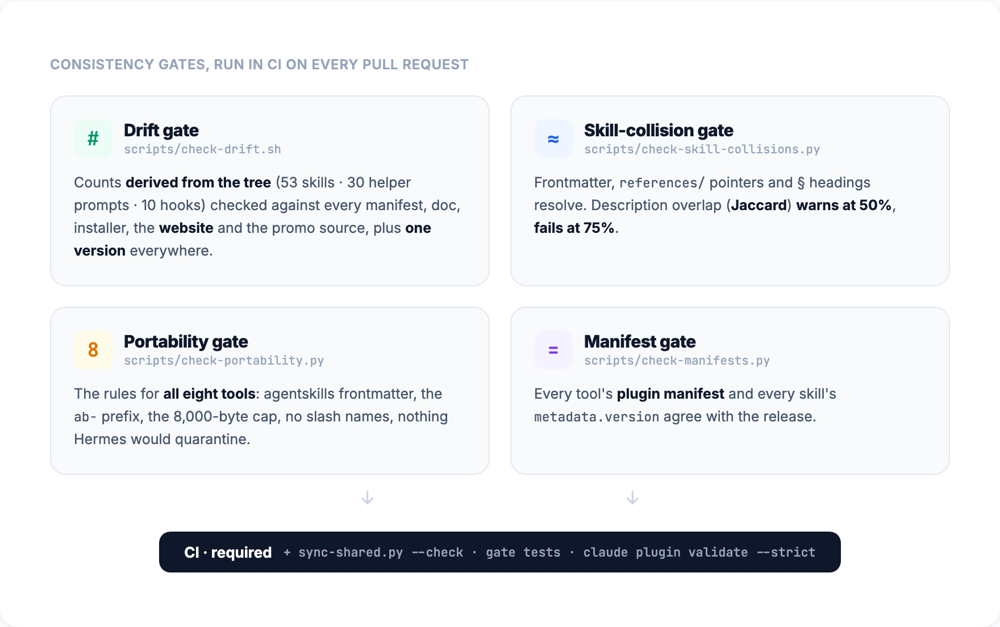
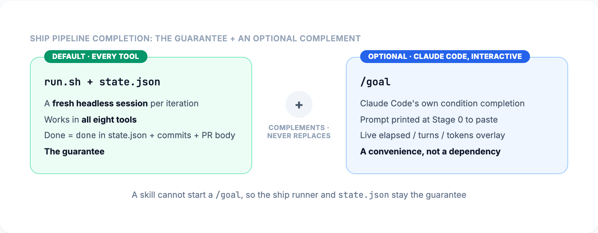

53 skills that take a coding agent from an idea to a reviewed pull request, in eight coding CLIs: Claude Code, Codex, Antigravity, Grok Build, Pi, Cursor CLI, Hermes and Amp.
One way of working that stays the same in every tool
A coding agent starts every session from nothing. It doesn't know how your project works, what was decided last week, or which problems were already solved, and when you switch to another tool, whatever the last one learned stays behind.
Agent Blueprint gives the agent one way of working that is the same in every tool. Skills take a feature from design through review to a pull request. Helper prompts handle the analysis that needs a fresh context, such as a security review or a plan check. Project documents under docs/ carry conventions, decisions and solved problems from one session to the next, so they are there whichever of the eight tools opens the repository next.
Skills, the helper prompts inside them and the quality gates written into them come from one skills/ folder, installed natively in Claude Code, Codex, Antigravity, Grok Build, Pi, Cursor CLI, Hermes and Amp.
Solved problems go to docs/solutions/, where ab-brainstorming and ab-deep-research search them before new work. Session notes in docs/context/STATUS.md carry over to the next session and the next tool.
Before the release, a smoke test ran a sample project through the build, review, debug, ship and team pipelines in every installed tool. The results are under Tested in each tool.
A development lifecycle toolkit, installed once per tool, with zero engine files in your project
Workflow steps that run at specific points: brainstorming, planning, test-driven development, debugging, review, team work, shipping, knowledge capture. Each is a folder with a SKILL.md under 8,000 bytes and its detail in references/.
Prompt files for focused analysis (security, performance, architecture, research, plan checking) inside the skill that uses them. A helper runs one in its own context where the tool has subagents; otherwise the session follows the file itself. Both return the same output.
A committed manifest for every tool with a plugin system, and one shared copy of the skills for the rest. A tool picks a skill when your request matches its description, or you name it: ab-brainstorming, ab-ship-pipeline, ab-review-swarm and the others.
Optional guards for Claude Code (10 handlers) and Codex (5): a session-start pointer to STATUS.md, injection scanners, a commit-message check, the ship-pipeline Stop guard, the Agent Teams gates. No pipeline depends on them.
One skills folder, installed the way each of the eight tools expects

The installer finds the tools on your PATH and gives each one its route:
Or install one tool at a time with the route in this table (<checkout> is the folder you cloned):
| Tool | Command | Install route | Support note |
|---|---|---|---|
| Claude Code | claude | claude plugin marketplace add Ninety2UA/agent-blueprint, then claude plugin install agent-blueprint@agent-blueprint | claude-code.md |
| Codex | codex | bash install.sh --only codex (the shared copy). On a machine with only Codex, codex plugin marketplace add <checkout> then codex plugin add agent-blueprint@agent-blueprint instead; never both | codex.md |
| Antigravity | agy | agy plugin install <checkout>, or bash install.sh --only agy | antigravity.md |
| Grok Build | grok | bash install.sh --only grok (the shared copy) | grok-build.md |
| Pi | pi | bash install.sh --only pi (the shared copy) | pi.md |
| Cursor CLI | cursor-agent | bash install.sh --only cursor-agent (the shared copy) | cursor-cli.md |
| Hermes | hermes | bash install.sh --only hermes, then add ~/.agents/skills under skills.external_dirs in ~/.hermes/config.yaml (the installer prints the lines) | hermes.md |
| Amp | amp | bash install.sh --only amp, or nothing if Claude Code already has the plugin, because Amp reads Claude Code's install | amp.md |
The shared copy is one copy of skills/ in ~/.agents/skills, read by Codex, Grok Build, Pi, Cursor CLI, Hermes and Amp. The installer records it in ~/.agents/skills/.agent-blueprint-install.json, so running it again removes skills that were renamed or dropped since. Keep one route per tool. A tool that sees the skills twice lists every skill twice: Codex with both its plugin and the shared copy, and Cursor CLI or Grok Build next to a Claude Code install, which both can import. The support note for each tool says what to check before adding a route.
Installer options:
Start a session and ask which skills it has that start with ab-. You should see them listed; the support note for your tool names its own listing command. Two skills, ab-plugin-update and ab-migrate, are manual-only and stay out of that list on purpose: they run only when you name them.
Every tool also picks a skill on its own when your request matches its description.
| Tool | How to name a skill |
|---|---|
| Claude Code, Antigravity, Grok Build, Cursor CLI, Hermes | / followed by the skill name, for example /ab-brainstorming |
| Codex | $ followed by the skill name, for example $ab-brainstorming |
| Pi | /skill: followed by the skill name |
| Amp | Ask in plain words: "use the ab-brainstorming skill" (Amp removed user invocation of skills in May 2026) |
What each tool supports:
| Tool | Hooks | Helpers | Manual-only skills |
|---|---|---|---|
| Claude Code | 10 handlers | Subagents, worktree isolation | Kept out of the model's list |
| Codex | 5 handlers with the plugin route, after you trust them in /hooks; none with the shared copy | Subagents, file ownership | Kept out of the model's list |
| Antigravity | None | Subagents, worktree isolation | Kept out of the model's list (smoke test on 1.2.16) |
| Grok Build | None | Subagents, worktree isolation | Kept out of the model's list |
| Pi | None | With the pi-subagents package; inline without it | Kept out of the model's list |
| Cursor CLI | None | Subagents, worktree isolation | Kept out of the model's list |
| Hermes | None | Subagents (delegate_task), two per one-shot run | Cannot be enforced |
| Amp | None | Subagents, file ownership | Cannot be enforced |
From an installed blueprint to a first feature and a handover to the next session
Follow the steps under Install.
Open a session in your project and ask for the ab-project-start skill. It adds AGENTS.md (with a one-line CLAUDE.md that imports it), docs/context/, BACKLOG.md and .agent-blueprint/.gitignore, merging into what is already there, then fills in conventions, goals and status from your code and a short conversation. To add only the files, without a session:
Ask for the ab-brainstorming skill with your idea. It checks what the repository already answers, compares two or three approaches, asks you to approve a design, and saves a plan under docs/plans/. Read the plan before anything runs, because it holds the details the design left open.
ab-build-pipeline runs the plan with a checkpoint after every stage.ab-ship-pipeline runs it end to end with no checkpoints.ab-orchestrate runs it as team work, in parallel waves.A bug fix with an obvious cause, a typo, a config change or a test for existing behavior, touching under three files, goes through ab-quick-fix: a failing test, the fix, the whole test suite, a commit.
Ask for ab-session-wrap at the end. It updates docs/context/STATUS.md from git history and the file system. Next time, ab-resume-session reads it back and tells you whether anything moved in between.
One ship runner for any of the eight tools, driven by a state file
For a well-defined feature you want built hands-off, the ship runner drives ab-ship-pipeline through your tool's headless mode. Inside a session you can also ask for the skill with the feature; the runner is for running it from a terminal, without you.

The runner refuses to run on the default branch.
--host is one of claude, codex, agy, grok, pi, cursor-agent, hermes, amp. Add --dry-run first to see the preflight and the command it would run without changing anything.
It checks that the tool is installed and signed in, records the remote and branch it will push to, and probes whether the tool's headless posture can write to .git. Where it cannot (Codex workspace-write), the skill leaves its work uncommitted with the message in .agent-blueprint/run/commit-msg.md, and the runner commits after each iteration.
Every iteration is a new headless session with a clean context. The skill locks the requirements as decisions, writes and verifies a plan, deepens it with research, builds it through ab-orchestrate, reviews and fixes until no P1 finding is left (three rounds at most by default), records what it learned, commits, and writes the pull request body. Between iterations the runner reads .agent-blueprint/run/state.json.
Text the agent prints never ends a run. It is done only when the state file says done, there are new commits since the recorded base, the pull request body exists, and the provenance record names the skill and its version.
The runner scans every commit in the outgoing range, their messages and the pull request body for secrets, including any .env file a commit added. Then it pushes only to the remote and branch it recorded and opens or updates the pull request. It stops as needs-human instead if .git/config changed during the run, or if the range touches .github/workflows or .github/actions and you did not pass --allow-ci-changes.
The run ends as blocked or needs-human with a reason in state.json, or as blocked when the stage, the commits and the team ledger stay unchanged for two iterations. Fix the cause and continue with --resume. When the reason isn't enough, the ab-forensics skill reads the run's logs, state and git history.
Each tool runs with the least privilege that still finishes a run:
| Tool | Headless posture |
|---|---|
| Claude Code | --permission-mode auto |
| Codex | workspace-write with network on |
| Cursor CLI | --force --sandbox enabled |
| Grok Build | --always-approve --sandbox workspace |
| Pi, Amp and Antigravity | Unguarded only (--dangerously-skip-permissions or the equivalent), so the runner asks for --allow-unguarded before it starts one of them |
On Pi, Amp and Antigravity the agent holds your git and gh credentials, and the runner's publish checks cannot contain it.
Moving a project from claude-code-blueprint v3.8.0 to Agent Blueprint v4.0.0
Follow the steps under Install. In Claude Code the new plugin is agent-blueprint@agent-blueprint; the old claude-code-blueprint@claude-code-blueprint stays installed until step 3, and the v4 session-start hook reminds you until then. install.sh --legacy, which copied v3 into a project's .claude/, is retired and points you at ab-migrate.
Open a session in a project that used v3 and name the skill (it is manual-only). It lists what v3 left there: in-project copies of skills, agents and hooks, scripts/ship.sh, ship state under .claude/, and a CLAUDE.md that should become AGENTS.md. It asks once, removes only the files the blueprint installed, behind a blueprint-v3-backup branch, and makes no commit, so you review the diff and commit it yourself.
Run ab-project-start in the migrated project. It adds the v4 files the project lacks and keeps every section your AGENTS.md already has.
/build-pipeline is now ab-build-pipeline, and every other skill gained the same prefix. The full map, the folder changes and what happened to each v3 instruction rule are in docs/upgrade/v4.md.
Each install route has its own update step
| Install route | How to update |
|---|---|
| Claude Code plugin | claude plugin update agent-blueprint@agent-blueprint, then /reload-plugins |
| Codex plugin | codex plugin from the marketplace you added; the ab-plugin-update skill finds the right subcommand, or falls back to the shared copy |
| Antigravity | git pull in the checkout, then agy plugin install <checkout> again |
| The shared copy (Codex, Grok Build, Pi, Cursor CLI, Hermes, Amp) | git pull in the checkout, then bash install.sh again |
In any tool, the ab-plugin-update skill works out which route you used, runs it, and checks the installed version against main.
Four ways to run a feature, the same in every tool
Runs a feature through eight stages (discuss, brainstorm, plan, execute, review, verify, an optional deploy check, knowledge capture) with a checkpoint after each.
No checkpoints. Locks assumptions as decisions, writes and verifies a plan, deepens it, builds it through ab-orchestrate, reviews until the findings converge, then commits and writes the pull request body.
A small, well-understood change touching under three files: a failing test, the fix, the whole test suite, then a commit on a branch.
Runs a plan as a team: a task ledger, dependency-ordered waves, file ownership or worktrees, and only the lead commits. Works in every tool.
| Pipeline | How it runs | When |
|---|---|---|
ab-build-pipeline | Eight supervised stages with a checkpoint after each; --iterate N adds rounds of review and fix through ab-iterative-refinement | A feature you approve stage by stage |
ab-ship-pipeline | End to end with no checkpoints, tracked in .agent-blueprint/run/state.json | A well-defined feature you want built hands-off |
run.sh --host <tool> (the ship runner) | Drives ab-ship-pipeline through the tool's headless mode, a fresh session per iteration | Running a feature from a terminal, without you (see Unattended runs) |
ab-quick-fix | A short test-first loop, then a commit on a branch | Under three files, obvious approach |
ab-orchestrate | Ledger, dependency-ordered waves, file ownership or worktrees, lead-only commits, review and sign-off | Four or more tasks, some independent |
Every feature follows this flow, from orientation to a merged branch
Load context with ab-project-status or ab-resume-session, or set up with ab-project-start
Lay out the tradeoffs and get your approval before any code is written
ab-brainstormingTasks that record decisions: file paths, each test and what it asserts, signatures, a review focus list. You review the saved plan.
ab-writing-plansTest-driven development, verification with evidence, and a review from a helper
ab-orchestrateMerge the branch, update the project docs, and record what was learned for the next session
ab-session-wrap
Before the design step, ab-ideation can read the codebase, the learnings and the git history and rank improvement ideas. Bug fixes with an obvious cause, typos, config changes and tests for existing behavior take the short path, ab-quick-fix: write a failing test, fix it, verify, commit. The boundary is three files: a change that touches three or more files, adds an API or changes a data model goes through ab-brainstorming and then ab-build-pipeline. The scaffolded AGENTS.md states the same rule.
Five checkpoints hold at every stage
ab-brainstorming
ab-test-driven-development
ab-systematic-debugging
ab-verification-before-completion
ab-requesting-code-review
SKILL.md and keep the file under 8,000 bytes.
Helpers run one at a time or in coordinated groups. A helper runs where the tool has subagents, and the session does the work itself where it does not.
Specialized reviewers in parallel: quality, simplicity and tests every time; security, performance, conventions, frontend, architecture, data and schema when the diff calls for them. A validator re-checks the findings, and a synthesizer merges them into one prioritized P1/P2/P3 report.

Five helpers research a topic in parallel before planning: past learnings, framework docs for the installed versions, industry practice, git history, and a map of the code the change touches. A synthesizer turns their findings into one brief.

Your session is the lead. It keeps a task ledger in .agent-blueprint/team/<run>/, groups the tasks into waves by dependency (tasks that share a file never share a wave), and starts one helper per task. Only the lead commits, and it runs an integration check between waves.

If you have switched one on, the lead uses Claude Code Agent Teams (interactive sessions only) or Codex multi_agent_v2 (long-lived helpers that take follow-up tasks) on top of the ledger. The ledger stays the task list either way.

A wave has four tasks by default and never more than the tool's helper limit in skills/ab-orchestrate/references/host-limits.tsv (Claude Code 20, Codex 4, Pi 4 with pi-subagents, Hermes 3 interactive and 2 one-shot; Antigravity, Grok Build, Cursor CLI and Amp document no limit). A run can resume from the ledger in another session or another tool.
| Pattern | Best for | How it works |
|---|---|---|
Swarms (ab-review-swarm, ab-deep-research) | Analysis: the same input through different lenses | Read-only helpers; a synthesizer merges the outputs |
Team work (ab-orchestrate) | Implementing a plan's tasks | Task ledger, waves, file ownership or worktrees, lead-only commits |
A typical feature combines them: ab-deep-research, then ab-brainstorming, then ab-orchestrate, then ab-review-swarm.
The blueprint never picks a model or an effort level for you, in any tool
No skill or helper prompt sets either one, so a pipeline reasons at whatever level your session runs, and a helper inherits that choice wherever the tool passes it on. A prompt whose role header says it is safe at lower effort may run lower only where the tool takes a per-helper effort and you have not asked for your level everywhere. The blueprint never switches models to save effort.
| Tool | Set the model | Set the effort | Do helpers inherit them? |
|---|---|---|---|
| Claude Code | /model in a session, or claude --model <model> | /effort, claude --effort <level>, or CLAUDE_CODE_EFFORT_LEVEL; a level saved in settings applies below those | Yes: a helper without an effort of its own inherits the session level; verified on 2.1.284 |
| Codex | /model in a session, or codex -m <model> | model_reasoning_effort in ~/.codex/config.toml (low to ultra, by model) | Yes: a subagent inherits the parent's model and effort unless configured otherwise, and spawn_agent can set effort per helper |
| Antigravity | /model in a session (saved), or agy --model <model>; agy models lists them | agy --effort low|medium|high|xhigh|max | Not verified: a subagent definition can set a model tier, and no per-dispatch override is documented |
| Grok Build | /model, grok -m <model>, or [models] default in ~/.grok/config.toml | --effort none|minimal|low|medium|high|xhigh|max | Not verified: per-dispatch model and effort are not documented |
| Pi | /model, or pi --model <pattern>[:thinking] | /thinking, or --thinking off|minimal|low|medium|high|xhigh|max (clamped to the model) | Only with the pi-subagents package, which takes a per-dispatch model:"provider/id:level"; inheritance not verified |
| Cursor CLI | /model picker, or cursor-agent --model 'id[effort=high]' | Inside the model string: id[effort=high]; there is no separate effort flag | Helpers defined in agent files can say model: inherit; for the blueprint's helpers, not verified |
| Hermes | /model in a session, or hermes -m <model> --provider <provider> | /reasoning high in a session, or agent.reasoning_effort in ~/.hermes/config.yaml | No: helpers use the global delegation.model and delegation.reasoning_effort settings |
| Amp | The Dial: a mode (low, medium, high, ultra) sets model, effort, prompt and tools together, chosen before the first message and fixed for the thread | Part of the mode | Not verified: a prompt cannot pick a model per helper |
Opus 5.5 is the default model on every plan from CLI 2.1.280 and starts sessions at medium effort; other current models start at high. A level set with --effort, /effort or the environment variable wins over settings, and settings win over the model default. Some reference points:
| Session setting | Fits |
|---|---|
Opus 5.5 at high | A solid default for pipeline runs |
Opus 5.5 at xhigh, or Fable 5.1 at high | Hard or high-stakes work; slower and costlier |
Opus 5.5 at medium (its starting level) or lower | Small tasks, quick fixes and questions |
The ship runner passes no model or effort flag of its own, so an unattended run uses the defaults you saved in the tool.
Solved problems are recorded where the next plan will look for them
After a non-trivial problem, ab-knowledge-compounding records it in docs/solutions/ with search terms and cross-links.
ab-brainstorming and ab-deep-research search docs/solutions/ before new work, so the project stops repeating its mistakes.
ab-session-wrap appends patterns and gotchas to docs/learnings/LEARNINGS.md at the end of a session, whichever tool ran it.
A handoff note between sessions, and between tools
ab-session-wrap rewrites the notes from git history and the file system
ab-resume-session reads them first and checks whether HEAD moved
AGENTS.md and docs/
30 helper prompts in six groups, each kept inside the skill that uses it. No prompt sets a model or an effort, so helpers work at the level you chose for the session.
CONVENTIONS.md compliance
A skill starts a helper where the tool has subagents and follows the same file itself where it does not; either way the result comes back in the prompt's Output section. Each prompt opens with a role header (what it may change, whether it is safe at lower effort, and that it starts no helpers of its own). A prompt that several skills use has one source and identical copies, checked by scripts/sync-shared.py --check.
Every skill, by category. Each one runs in all eight tools: name it the way your tool names skills, or describe the task and let the tool pick it.
The blueprint uses a tool's native features only as opt-ins: no pipeline depends on a gated or experimental capability



The repository checks itself against its own files. CI runs every gate on every pull request, and AGENTS.md lists them for maintainers.
| Command | Checks |
|---|---|
bash scripts/check-drift.sh | Count and version claims on every surface (manifests, README, website, promo source, AGENTS.md) match the tree |
python3 scripts/check-skill-collisions.py | Frontmatter YAML, references/ pointers and § headings resolve, no near-duplicate descriptions |
python3 scripts/check-portability.py | The rules for all eight tools: agentskills frontmatter only, the ab- prefix, the 8,000-byte cap, no tool variables or cross-skill paths, no slash names, the manual-only pairing, no text Hermes would quarantine |
python3 scripts/check-manifests.py | Every manifest and every skill's metadata.version agree with the release |
python3 scripts/sync-shared.py --check | Shared snippets and prompt copies match their sources |
python3 -m unittest discover -s tests/gates | The gate and skill-contract tests |
claude plugin validate --strict .claude-plugin/plugin.json | The plugin manifest, with Claude Code's own validator |
The ship runner has its own tests under tests/runner/, which drive run.sh against a fake tool. The smoke test in tests/smoke/ runs outside CI because it needs the real tools and their accounts. A tool that fails only because of a vendor bug ships marked degraded in its support note, with a link to the upstream issue; a failure in the blueprint's own code blocks the release.
A smoke test in every installed tool before the release, and an evaluation against v3.8.0
Before the release, a local smoke test (tests/smoke/) ran a sample project through each installed tool's headless mode:
discovery of all 53 skills, an AGENTS.md check, hooks, the manual-only rule, and the build, review, debug, ship and team pipelines.
The full table, with times and reasons, is docs/releases/v4.0.0-smoke.md, and each support note under docs/hosts/ repeats its tool's row.
| Tool | Version tested | Result |
|---|---|---|
| Claude Code | 2.1.288 | Every check passes; with helpers switched off, the pipelines run inline as designed |
| Codex | 0.155.1 | Every check that applies passes (hooks, effort and upgrade do not apply to Codex) |
| Cursor CLI | 2026.10.01 | Every check that applies passes; the manual-only check ran in a profile with only the blueprint installed |
| Antigravity | 1.2.16 | Discovery, AGENTS.md, hooks, manual-only, ship and team pass, and debug passes inline. Build and review finish their work, but Gemini does not always write the provenance record those two checks require |
| Grok Build | 1.0.34 | Discovery, AGENTS.md, hooks and manual-only pass; the pipeline checks stopped on the free tier's usage limit |
| Pi, Hermes, Amp | Not installed on the test machine | Their install routes follow the vendor docs and have not been run yet |
An evaluation then ran the same fixture tasks on v3.8.0 and v4.0.0 in Claude Code (docs/releases/v4.0.0-eval.md). Build, review and debug passed on both versions, with no task getting worse. v4 is slower and costs more per task (review took 7m21s instead of 3m08s), because a v4 pipeline writes a provenance record, runs reviews as a swarm with a validator, and takes debugging all the way to a regression test. The ship pipeline was not part of the evaluation: one run costs about $40 and nearly two hours, and the smoke test above already shows it passing end to end.
claude-code-blueprint v3.8.0 is now Agent Blueprint v4.0.0. Version 3 was a Claude Code plugin. Version 4 is one set of skills that installs natively in eight coding CLIs. The repository is renamed agent-blueprint, and GitHub forwards links that use the old name.
This is a clean break. Skill names, the instructions file and the working folders all changed, so a project that used v3 needs one migration step, described in Upgrade from v3.
The eight are Claude Code, Codex, Antigravity, Grok Build, Pi, Cursor CLI, Hermes and Amp. Every tool with a plugin system gets a committed manifest that points at the same skills/ folder (.claude-plugin/, .codex-plugin/, the root plugin.json for Antigravity, .grok-plugin/, the pi key in package.json, .cursor-plugin/), and the rest read one shared copy of the skills. You run bash install.sh and it installs for every tool it finds. Each tool has a support note under docs/hosts/ that says what is different there.
There are 53 skills, from ab-brainstorming to ab-ship-pipeline. The prefix keeps them apart from other skill packs in a shared skills folder. Two skills merged and one was renamed: agent-teams and team-execution are now ab-orchestrate, and migrate-to-plugin is ab-migrate. The full old-to-new list is docs/upgrade/v4-skill-names.tsv.
The 29 v3 agent files are now 30 prompt files kept inside the skills that use them (skills/<skill>/references/agents/<name>.md). A skill hands one to a helper where the tool has subagents, and follows it in the main session where the tool has none; both ways return the same output. No prompt sets a model or an effort, so helpers work at the level you chose for the session.
Every one of the eight tools reads it. For Claude Code, CLAUDE.md holds the single line @AGENTS.md. The ab-project-start skill merges its sections into the files a project already has and never overwrites them.
Plans in progress, review runs, debug notes, the team ledger and run state moved out of .claude/, which the other tools treat as foreign. Session notes are in docs/context/STATUS.md.
ab-orchestrate runs a plan through a task ledger in dependency-ordered waves. It uses helpers where the tool has them and runs the tasks one after another where it does not. Claude Code Agent Teams and Codex multi_agent_v2 are optional extras on top of the ledger.
skills/ab-ship-pipeline/scripts/run.sh --host <tool> "<feature>" runs a feature end to end without you, starting a fresh session for every iteration. It pushes and opens the pull request only after its own secret scan. See Unattended runs.
Claude Code gets 10 hook handlers and Codex 5. The other six tools run every pipeline without them.
CI checks the rules all eight tools need (frontmatter, the ab- prefix, an 8,000-byte cap on every SKILL.md, no tool-specific variables), that every manifest and skill carries the same version, and that shared text matches its source. The full list is under Native features and CI checks.
It finds what v3 left in a project, asks once, removes only the blueprint's own files behind a backup branch, and turns CLAUDE.md into AGENTS.md.
A local smoke test ran a sample project through the main pipelines in every installed tool, and an evaluation compared v3.8.0 with v4.0.0 on the same tasks. The results are under Tested in each tool.
The decision record behind the change is docs/learnings/2026-10-portability-decision.md, and the release notes are docs/releases/v4.0.0-release-notes.md.
| Version | Date | What changed |
|---|---|---|
| v3.8.0 | 2026-09-28 | Plans record decisions instead of code, and you review the saved plan before it runs. A security finding can be rejected only with a quoted refutation. Reviews start at the merge base and include untracked files. Opus 5.5 defaults documented. CI fails on frontmatter that isn't valid YAML and on references that don't resolve. |
| v3.7.1 | 2026-09-12 | Four large skills split into a short SKILL.md plus references. Fixes to finishing a branch from a worktree and to detecting a moved HEAD when resuming. |
| v3.7.0 | 2026-09-12 | A plan audit before a branch is finished, discarding work only on request, one rule for when an agent decides and when it asks, a fix loop that resumes the same implementer, tests that must be able to fail, and fetched text treated as data. |
| v3.6.0 | 2026-09-11 | Task tracking moved to a plan-scoped progress file after Claude Code removed its task tools on newer models. Platform limits refreshed. ab-plugin-update tries claude plugin update first. CI validates the plugin manifest. |
| v3.5.2 | 2026-07-20 | A bug-reproduction validator checks disputed repros and non-trivial fixes in a fresh context. |
| v3.5.1 | 2026-07-20 | Leftover command names from before v3.2 removed. The site and the README list every skill, and the drift gate checks the site grids and the promo source. |
| v3.5.0 | 2026-07-19 | Brainstorming maps unfamiliar decisions, CI flags near-duplicate skill descriptions, debugging covers LLM-specific security risks, and reviewers get the change and its contract without the author's claims. |
| v3.4.0 | 2026-07-17 | A copyable /goal prompt for interactive ship runs, the drift gate that derives every count from the files, and hooks that start without a shell. |
| v3.3.0 | 2026-05-12 | A read-injection scanner hook, data markers around external text, persistent debug session files, ab-forensics, a doc-claim verifier, a pattern mapper and an opt-in commit-message check. |
| v3.2.1 | 2026-04-21 | Eighteen fixes from a full audit, among them hook syntax checks for TypeScript and Python and a safer subprocess call. |
| v3.2.0 | 2026-04-13 | Commands merged into skills, so every workflow loads its full content when named. |
| v3.1.0 | 2026-04-10 | A native Claude Code plugin: install once, no engine files in your project, project files scaffolded on demand. |
| v2.3 | 2026-03 | Interface context in plans, a prompt-injection guard hook, stub tracking, verification commands in every plan step, suppression lists for reviewers, a premise check in brainstorming, and trigger testing for skill descriptions. |
GitHub Releases carry the full notes for each version.
pi-subagents, and manual-only skills kept out of the model's list everywhere except Amp and Hermes. The pipelines run end to end in every tool; the support note under docs/hosts/ for yours says what is different there and how it did in the smoke test.
hooks/claude-code.json, 10 handlers) and Codex (hooks/codex.json, 5; Codex runs them after you trust them in /hooks). The other six tools lose only what the hooks add: the session-start pointer to docs/context/STATUS.md, the injection scanners on reads and writes, the context monitor, the commit-message check, the fetch cache, the ship-pipeline Stop guard and the Agent Teams gates. No pipeline depends on any of them, and the ship runner drives an unattended run through state.json in every tool.
ab-project-start skill in the project: it adds AGENTS.md and docs/ by merging into what exists, and never overwrites your code or instructions.
ab-test-driven-development never runs. You can also delete any skill folder you don't want; the blueprint works with any subset.
AGENTS.md adds a small amount of context. Skills load when they run, not up front, and each SKILL.md stays under 8,000 bytes with its detail in references/, read at the point of use. A full pipeline does take longer than a single prompt, because it plans, reviews and verifies: see the evaluation under Tested in each tool.
ab-plugin-update skill finds the route you used, runs it and checks the version. Your project files (AGENTS.md, docs/, BACKLOG.md) are never touched.
ab-migrate in each project, remove the v3 plugin, refresh the project files with ab-project-start. The name map and the folder changes are in docs/upgrade/v4.md.
docs/decisions/, docs/plans/, docs/specs/ and docs/research/ that show the expected format for each kind of document. They are marked as examples. Delete them when you start your own project.
ab-quick-fix covers small, well-understood changes (under three files, obvious approach): write a failing test, fix it, verify, commit. The scaffolded AGENTS.md states the boundary.
ab-review-swarm reviews a change from several angles and merges the findings; ab-deep-research runs five researchers before planning. Use swarms for significant changes: they cost more tokens and catch what a single reviewer misses. For a small change, a single ab-requesting-code-review is usually enough.
ab-orchestrate) implements a plan: the lead keeps a task ledger, runs tasks in dependency-ordered waves with each helper owning its files, and commits each finished task itself. It runs in every tool, one task after another where the tool has no helpers, and uses Claude Code Agent Teams or Codex multi_agent_v2 when you have switched them on.
needs-human if .git/config changed or the range touches CI configuration. Pi, Amp and Antigravity can only run unguarded, so they need --allow-unguarded, and there the agent holds your git and gh credentials. Amp's headless threads are visible to your workspace by default, according to its docs.
blueprint.local.md (gitignored, so each developer can choose). It lists which review and research helpers ab-review-swarm and ab-deep-research start. Comment out the ones that don't apply to your stack; a frontend reviewer has nothing to do on a CLI tool.